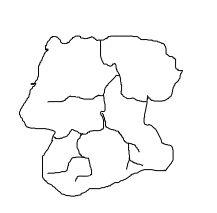
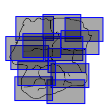
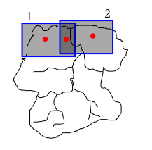
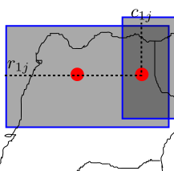
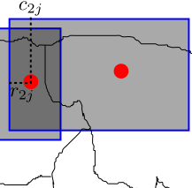

|  |
|---|
|  |
|---|
|  |
|---|
|  |
|---|
|  |
|---|
library(jpeg)
x=readJPEG('screenshot1.jpg') #replace screenshot1.jpg with your image name.
plot(1:2,ty='n') #set up the screen as [1,2]x[1,2] or whatever you like.
rasterImage(as.raster(x),1,1,2,2) #draw the image on screen.
You may need to install the jpeg package first.
Similarly, there is a package called png for reading images in the png format.
To allow the user to click at points on an image and to get the coordinates of the clicked points:
p = locator(1) #for one click p = locator(2) #for two clicks p = locator() #for any number of clicks (end with a rightclick)In each of these cases
p stores the coordinates of the clicked points (w.r.t. the coord system you set
us using the plot command earlier).
Please work with the map of a real location that interests
you. Some of you may collaborate to make a detailed map of the
same place.